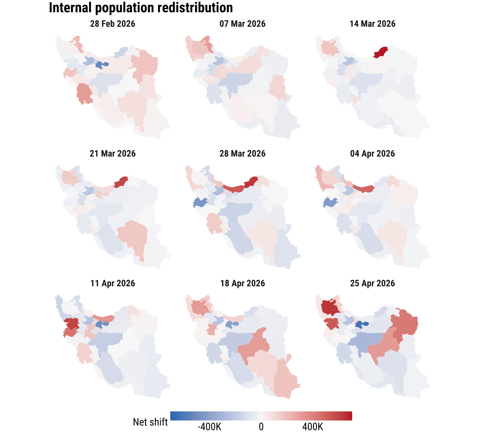

Iran conflict and population redistribution
Iran conflict and population redistribution
What is this story about?
This interactive resource updates our situation report published in Reliefweb and organise it into a smaller set of visuals. It focuses on the provincial war-time population index and the Wikipedia pageview evidence used to support or qualify that interpretation.
Our aim is to digital trace data as an alternative way to measure likely population dynamics in near real time in Iran. This is as conventional data sources to monitor population displacement in Iran following the outbreak of war on 28 February 2026 have been limited due to existing sanctions, active hostilities, information controls and restricted humanitarian access. Here we graphically show our estimates of population displacement. They help show where the strongest relative shifts in population presence appear, how those shifts evolve through time, and whether another digital trace points toward a similar geography.
- The war-time population index is the core signal: it shows relative change in provincial presence against a pre-war baseline.
- The province maps and trajectories are the main evidence for geographic redistribution during the reporting period.
- The Wikipedia maps and time series are a contextual check, not a second population estimator.
How should these graphics be read?
The province index is strongest when it is interpreted as a relative measure. Positive values suggest higher presence than the pre-war baseline, while negative values suggest lower presence, but both can still be shaped by wartime observability and connectivity conditions.
The Wikipedia evidence should be read even more cautiously. Pageview counts are small and partial, but they can still help show whether border-oriented attention and movement pressure are consistent with the geography seen in the province index.
What does the war-time population index show?
The first visual question is geographic. Where does the clearest redistribution signal appear once the war begins? In the sitrep, the strongest early changes appear first in border-oriented space rather than evenly across the country.
That makes the map sequence more than illustration. It is the first substantive claim of the story: the geography of the initial shock is clustered, and that clustering matters for how later changes are interpreted.
The second question is temporal. The provincial trajectories show whether those shifts persist, consolidate, or reverse as the reporting period continues.
This is where the story becomes more careful about likely origin and destination areas. Provinces with sustained declines are more plausible candidates for out-movement, while provinces with repeated increases are more plausible concentration zones.


What should readers take away?
This simplified interactive resource keeps the story close to the figures that carry the most interpretive weight.
- The province maps and trajectories are the core evidence for relative redistribution during the reporting period.
- The Wikipedia maps and time series help assess whether another digital trace supports the same broad geography and timing.
- The results remain proxy evidence and should be read as structured signals rather than exact counts.